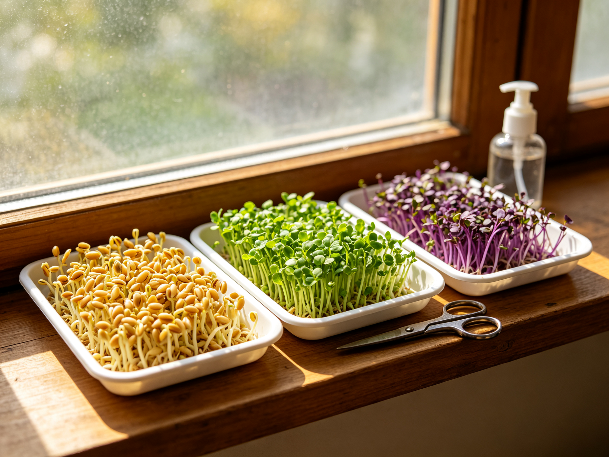

Growing Microgreens Indoors: Fresh Greens in 10 Days, No Garden Needed
Microgreens are the closest thing gardening has to instant gratification: scatter seeds on a tray, mist them for a week and a half, and you've got a crop that costs a fortune at the grocery store. No yard, no grow lights, no experience required — just a sunny windowsill and a little patience.
Why Microgreens Are Worth Growing
Those tiny stems in restaurant salads aren't just garnish. Studies consistently find microgreens pack 4-40 times the nutrient density of their mature counterparts, and they're harvested young enough to stay tender and sweet. At $3-6 per small clamshell at the store, a $4 packet of seeds that produces several trays pays for itself in a single harvest. For apartment dwellers and winter gardeners, they're the perfect bridge crop when the outdoor beds are dormant — if you can already grow herbs on a windowsill, you'll master these in one try.
What You Actually Need
- Seeds — buy labeled "microgreen" or "sprouting" seeds, not garden packets treated with fungicide. Sunflower, pea, radish, broccoli, and arugula are the easiest.
- A shallow tray — any 1-2 inch container with drainage holes works. Seedling trays or recycled takeout containers are fine.
- Growing medium — a thin 1-inch layer of potting mix, or coco coir for a cleaner harvest.
- Water — a spray bottle for misting is the only other essential.
That's it. Everything else — trays, labels, grow lights — is optional upgrade territory.
Step-by-Step: From Seed to Harvest
Day 0: Sow
Fill the tray with an inch of moistened medium and scatter seeds densely — about twice as thick as you would for seedlings. Microgreens grow shoulder to shoulder, so crowding is the point. Press them in gently and mist thoroughly.
Days 1-3: The Blackout Phase
Cover the tray with another tray, a plate, or a dark cloth to keep it humid and dark. This mimics the soil environment and produces straighter, sturdier stems. Check daily and mist if the surface looks dry.
Days 4-10: Light and Growth
Once most seeds have sprouted, remove the cover and move the tray to your brightest windowsill. Sunflower and pea will double in height almost daily. Rotate the tray every couple of days so they don't lean toward the glass. If your window is weak, a cheap LED grow light 4-6 inches above the tray works wonders — for more on indoor light, see our container gardening guide.
Harvesting Without Killing the Batch
Harvest when the first true leaves appear — usually day 7 for radish and broccoli, day 10-14 for sunflower. Use sharp scissors and cut just above the soil line in one clean pass. Rinse, spin dry, and refrigerate in a loosely covered container; they keep for about a week. One tray of sunflower gives roughly two cups of greens — enough for several salads or sandwiches.
Six Common Mistakes (And How to Avoid Them)
- Moldy trays — usually from too much water and no airflow. Mist lightly, not soaking; remove the cover as soon as sprouts appear.
- Leggy, pale stems — not enough light. Move to a brighter window or add a grow light.
- Seeds that rot — sow on the surface instead of burying them; press in, don't bury.
- Slow, patchy germination — seeds may be old or too dry. Keep the medium consistently damp during the blackout phase.
- Bitter taste — harvest earlier, before the true leaves fully open.
- Wasting the spent soil — dump tray contents straight into your compost bin; it's already half-decomposed. Composting at home closes the loop nicely.
Which Seeds to Start With
Sunflower (crunchy, nutty) and pea (sweet, tender) are the most forgiving for beginners. Radish adds a spicy kick and grows fastest. Broccoli is the nutrient powerhouse. Mix a few types in one tray for a rainbow harvest — just match seeds of similar speed so one doesn't shade the others.
If you're looking to stretch the season, microgreens are also the perfect companion to a raised bed garden: they bridge the gap between winter and the first outdoor harvest, and the spent trays become perfect seed-starting mix for spring.